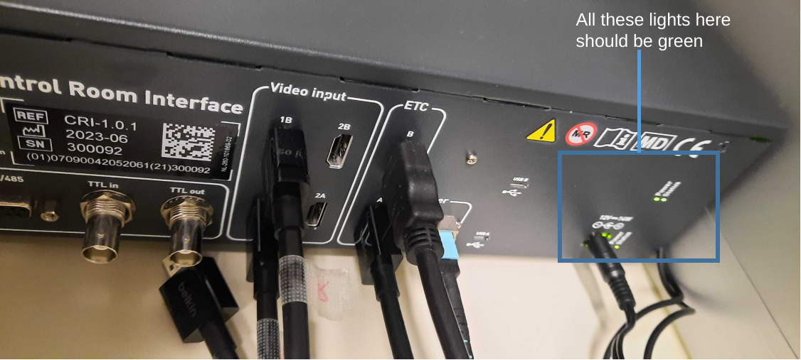

Update to the MRI lab setup
The MRI lab has had some upgrades in 2024 including:
New stimulation PC
Stimulation goggles
This document details some information about the new setup
General setup information:
Starting
Turn on the stimulus presentation PC
Turn on the eyetracking PC (if using the goggles or eyetracking)
Even if not using the eyetracker but using the goggles it is useful to use the eyetracker to be able to ensure that the goggles are aligned properly with the participant
- Login to the stimulus pc and/or the eyetracker pc with the credentials provided
When logging into the stimulus PC it might be that you actually don’t see anything on the screen yet if there are other screens connected to the stimulus PC, therefore the sequence of keystrokes when starting the PC is:
1. Enter decryption password
2. Press enter
3. Press enter again (this selects the top-most user)
4. Enter the user password required from the technician (or someone else in our lab)Plug peripherals in
- If you are using the goggles then make sure that the HDMI cables are first plugged in

- The right goggle’s hdmi cable (labelled with tape) should be in the top most position and the left in the bottom position
- The goggles can now be plugged in

The goggles need to be additionally turned on inside the scanner room (double check with technician that this is the case)
If using the eyetracker function of the goggles plug in the cable to link the eyetracker signal to the PC
- Start ViewPoint and you should see something other than ‘no signal’
- For more information visit the arringtonresearch website
Extend/ mirror display
- PopOS (the stimulation PC’s operating system) might be a bit funky when it comes to changing the display settings when doing so with the settings menu in PopOS
When opening the display settings do not click apply but instead choose a different settings option e.g. power/ sound/ notficiations etc. and then close the settings menu
- Use shortcut win + p to change whether to extend or mirror the screens, you can hit win + p twice and this will change to mirror mode
KVM switcher
- The KVM switcher is used to switch between devices and for the goggle + stimulation PC setup can be used to switch between either the eyetracker PC or stimulus PC
Trigger box
Sometimes the cable for the trigger box is unplugged/ or the cable that is plugged in is not attached to a PC
If this is the case the USB light on the box will be flashing (indicating that the USB is not connected)
Locate at the back of the box the corresponding USB input and plug it in
The USB light should stop flashing
Test the button box inside the scanner
- 8 lights on the left are blinking whenever the 8 buttons on the response boxes are being pressed
- On the right, the top light is constantly turned on if it is connected to the computer. On the bottom, the light is blinking whenever the scanner trigger is being sent
Experimental Protocol
Before entering the scanner room always make sure you are MR safe and sign the respective forms
- Ask the participant to sign the forms while doing so ensure that the button box inside the scanner works and double check the view on the goggles that everything looks okay
Psychopy
Start psychopy by opening the terminal and typing Psychopy-2024
Usually psychopy starts by asking to open a .psyexp file so just open the one you have or if using the coder only:
Open a .psyexp file that doesn’t apply to you
quit builder view and do not save
Now you can open a .py file
Alternatively start psychopy with the -c flag